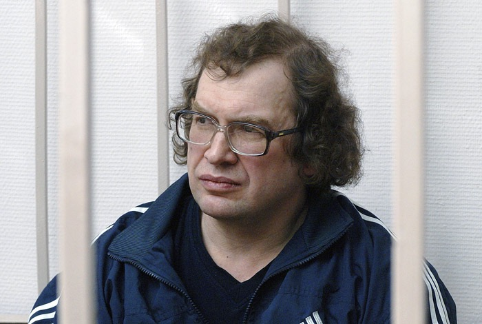

Регистрация в телеграм-боте: @Mavrodi_robot


То, что вы делаете сейчас это путь в бездну. Нельзя НИ В КОЕМ СЛУЧАЕ И НИ ПРИ КАКИХ ОБСТОЯТЕЛЬСТВАХ (кроме заранее оговорённых правилами биржевой торговли) приостанавливать торги!
Представьте себе на секунду, что завтра вдруг объявят, что деньги до 12.00 временно не принимаются (они приостановлены). Всё! Деньги сразу перестанут быть деньгами. Все поймут вдруг, что это просто раскрашенный клочок бумаги, и не более того. Потребовалось почти целое тысячелетие, чтобы убедить всех, что какая-то резаная бумага действительно может представлять собой ценность, разрушить же эту веру можно за одно мгновение.
Дальнейшие действия прозревших вдруг людей предугадать нетрудно. Все бросятся при первой же возможности избавляться от этих денег и приобретать на них хоть что-то реальное и неизменное (доллары, евро, что угодно!), не обращая уже внимания ни на что: ни на курс, ни на условия, ни на что! Ибо там-то хоть что-то, хоть какие-то гарантии, здесь же просто резаная бумага. Может, власти завтра вообще заявят, что она больше не принимается? До лучших времён? Потому-то, потому-то и потому-то!.. Если они так легко меняют правила?
Пусть инфляция, пусть миллионы процентов, пусть всё, что угодно! но деньги это деньги. Они принимаются ВСЕГДА. Это абсолютная ценность. Краеугольный камень.
То же самое и с акциями, и с любыми ценными бумагами вообще. Пусть они падают в цене хоть до нуля, но торги должны происходить в обычном режиме. Иначе всё. Конец. Из двух зол надо уж выбирать меньшее. Даже удивительно, что эти простые и очевидные совершенно вещи приходится растолковывать и объяснять.
Сергей Мавроди 30 сентября 2008
Регистрация в телеграм-боте: @Mavrodi_robot